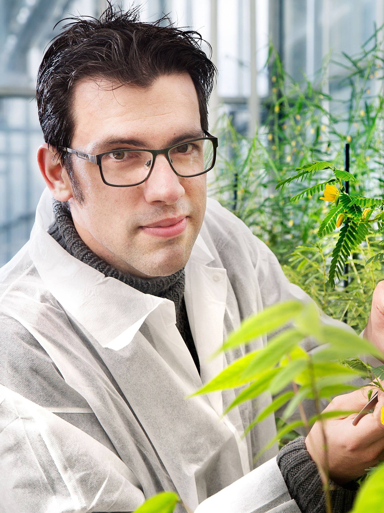

Wouter Kohlen
Professor Associado · Universidade de Maastricht
Maastricht, Países Baixos
- Fisiologia vegetal
- Plasticidade do desenvolvimento vegetal
- Iniciação de meristemas de novo
- Células-tronco de plantas
- Arquitetura e ramificação de plantas
Sobre
Professor Associado na Universidade de Maastricht (Países Baixos). Sua pesquisa investiga a notável plasticidade do desenvolvimento vegetal, com foco na iniciação de meristemas de novo e na regulação de células-tronco. As plantas possuem a capacidade de reativar continuamente a organogênese ao longo de sua vida — uma plasticidade alcançada por meio da formação de novos eixos de crescimento: os meristemas secundários. Wouter investiga como células diferenciadas recuperam a capacidade de formar novos meristemas, moldando a arquitetura e a adaptação das plantas, com o objetivo de contribuir para estratégias que melhorem o desempenho de culturas agrícolas e a sustentabilidade da agricultura.
O principal mecanismo de iniciação de meristemas secundários envolve a ativação de células fundadoras de órgãos laterais. Um aspecto central de seu trabalho é a iniciação de meristemas de novo — em contraste com a iniciação por células fundadoras, esses meristemas surgem a partir de células completamente diferenciadas que revertem a um estado indiferenciado para se rediferenciar em um meristema. Compreender e, em última instância, controlar a iniciação de meristemas de novo significa controlar a própria arquitetura das plantas, com implicações diretas para a melhoria de práticas agrícolas.
